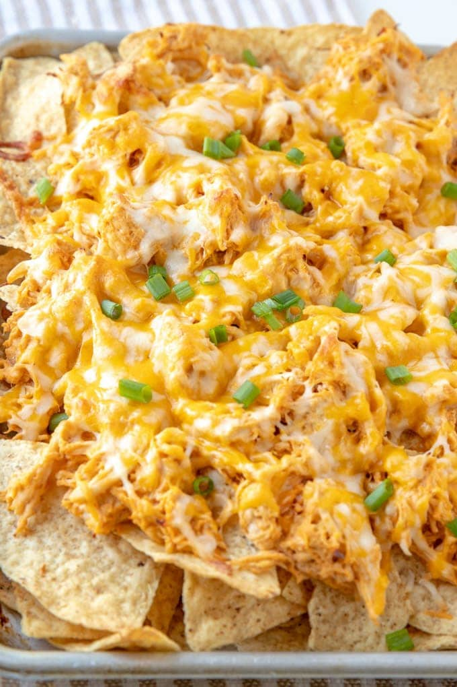

Buffalo Chicken Nacho Bowl

Description
Super easy to assemble and serve at gatherings. All the flavors of Buffalo chicken in a nacho bowl.
Ingredients
- 1 pound shredded rotisserie chicken
- ¼ cup Buffalo wing sauce
- 1 (16 ounce) package tortilla chips
- 1 (15 ounce) can black beans, rinsed and drained
- 1 (8 ounce) package shredded sharp Cheddar cheese
- ½ cup sour cream
- ¼ cup crumbled blue cheese
- 1 tablespoon chopped jalapeno peppers, or to taste
- 1 tablespoon chopped green onion, or to taste
Directions
- Preheat oven to 425 degrees F (220 degrees C).
- Combine chicken and Buffalo wing sauce in a bowl.
- Place 1 layer tortilla chips in the bottom of a baking dish; top with a layer of Buffalo chicken mixture, black
beans, and Cheddar cheese. Continue layering with remaining tortilla chips, Buffalo chicken mixture, black beans,
and Cheddar cheese.
- Bake in the preheated oven until cheese is melted, 10 to 15 minutes. Cover the nachos with aluminum foil if the
top is getting too dark.
- Top nachos with sour cream, blue cheese, jalapeno peppers, and green onion.